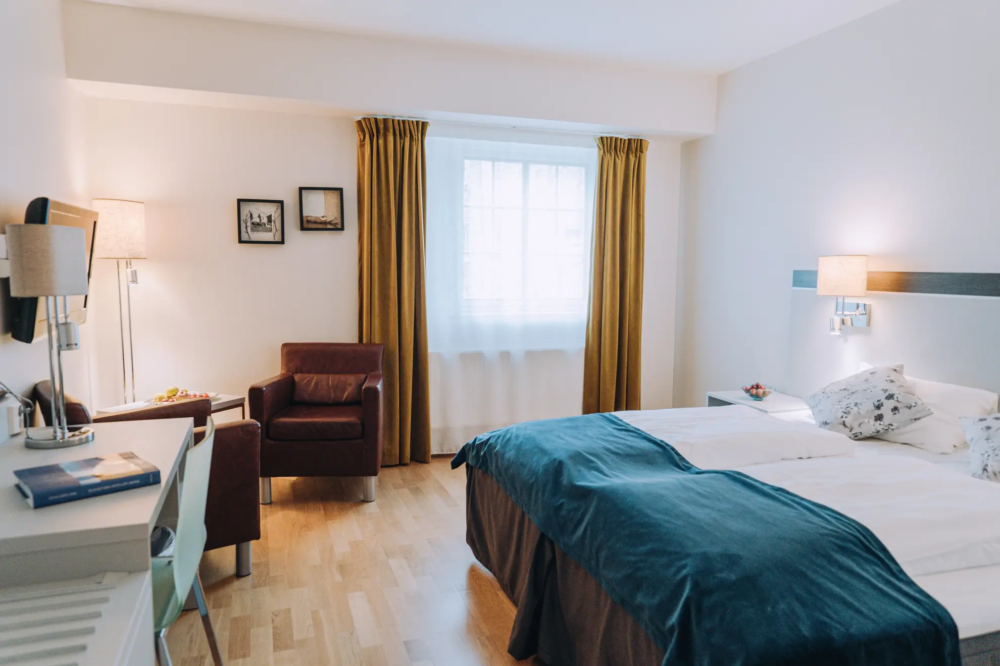
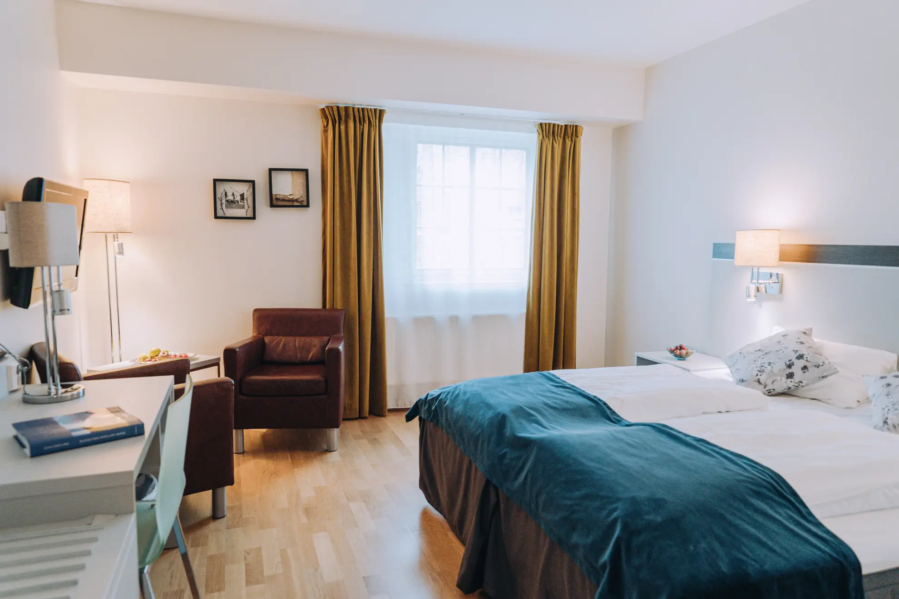

Key Business Facts
Financial Performance
- 2024 Revenue: 16.6 million NOK
- 2024 Profit: 556,000 NOK
- Property Value: 25 million NOK
- Growth: Revenue up from 12M NOK in 2022
Property Overview
- Building: 2,000-2,500 m² across 2 floors
- Land: 22,000 m² total property
- Parking: 50 spaces
- Built: 2008, renovated 2013
- Staff: 33 employees (17 full-time)
Corporate Structure
üè¢ Skaslien AS (948753243)
For Sale - Parent Company
- Owns all real estate and facilities
- Receives rental income from subsidiary
üè® Skaslien Gjestgiveri AS (992496967)
Operating Subsidiary - Included in Sale
- Runs hotel, restaurant & all operations
- Employs all 33 staff members
Awards & Recognition
Customer Reviews
Culinary Excellence
- "Best Dining Place Along the Road in Norway" (2001/2002)
- Regionvinner Ganefart (2008)
- Reiselivsprisen (2010)
- Finale Det Norske Måltid Stavanger (2013)
- 2nd place "Årets matglede bedrift" (2020)
Property & Facilities
Accommodation
40 guest rooms with 77 beds total across two floors

 

Restaurant & Kitchen
Award-winning restaurant with fully equipped commercial kitchen


Conference & Events
Up to 200 person capacity with modern AV equipment


Property Grounds
20,000 m² total property with expansion opportunities on over 10,000m² greenfield


Investment Opportunity
Turnkey Operation
Skaslien Gjestgiveri offers a rare opportunity to acquire a fully operational, award-winning hospitality business with 72 years of proven success. The property is ready for immediate takeover with all equipment maintained and serviced.
Growth Potential
- Strategic location between Elverum and Kongsvinger
- Gateway to expanding Finnskogen tourism region
- New Skogfinsk Museum opening 2025 (30km away)
- Comprehensive facilities ready for expansion
- Established reputation and loyal customer base
Competitive Advantages
- Award-winning cuisine as destination draw
- Diversified revenue streams (accommodation, restaurant, conferences, catering)
- Environmental certification (Miljøfyrtårn)
- Strong local business connections
- 47 apprentices trained - established culinary program
Current owners Ottar and Elin Skaslien offer transition support
Location & Regional Attractions
Strategic Location
Kirkenær, Grue municipality, Innlandet
- 90 minutes to Gardermoen Airport
- Between Elverum and Kongsvinger
- Gateway to Finnskogen forest region
- Close to Swedish border
Nearby Attractions
- Norsk Skogfinsk Museum - New building opening 2025
- Finnskogleden Trail - 240km cultural heritage hiking
- Trysil Ski Resort - alpine skiing 1,5 hours away
- Kongsvinger Fortress - Historic star-shaped fortress
- Klart Glass Workshop - World-class glass blowing (5km)


Contact Information
Ready for Your Questions
Skaslien Gjestgiveri represents a unique opportunity to acquire a turnkey hospitality business with 72 years of heritage. Contact us to discuss this investment opportunity.
Viewing: By appointment
Documentation: Full prospectus available to serious inquiries